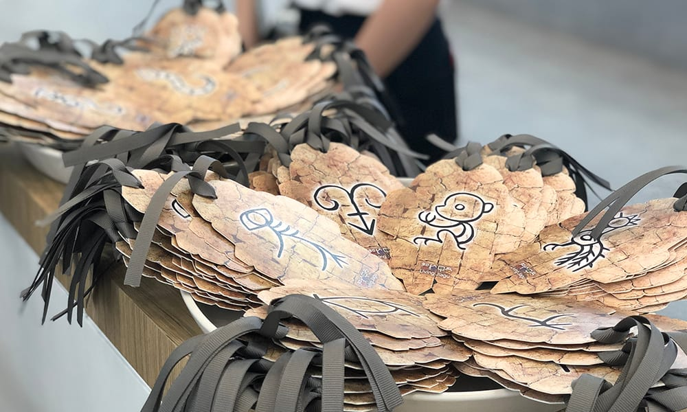
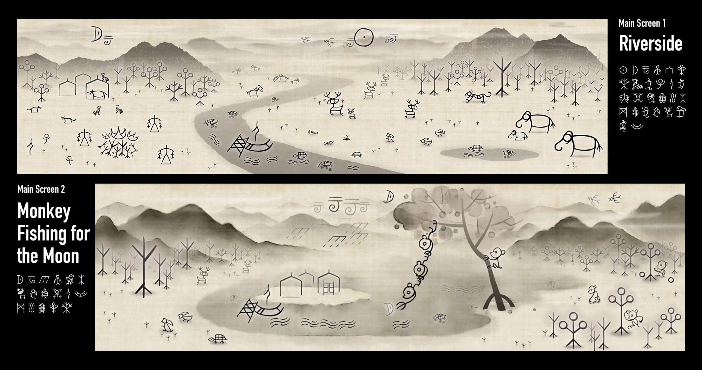
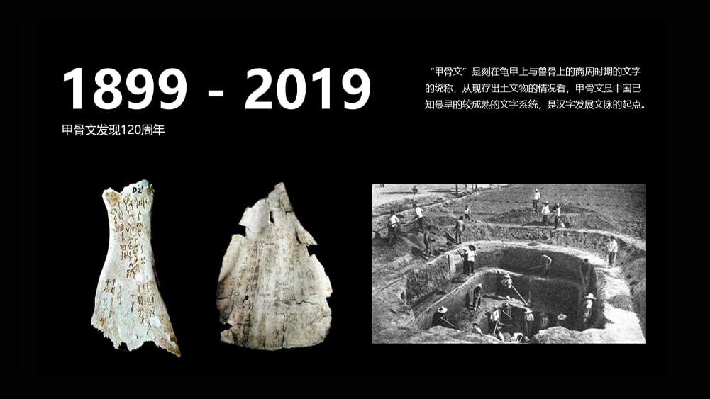
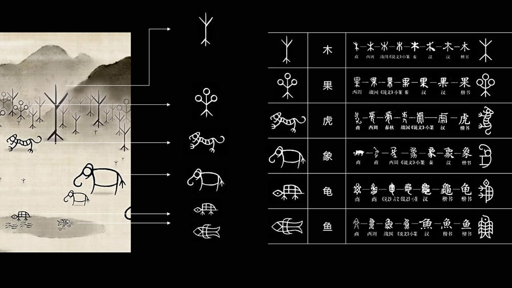
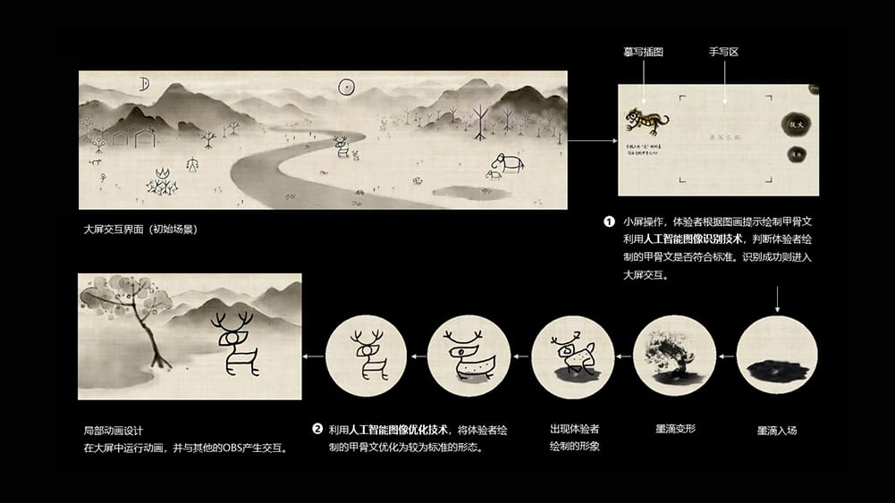

Bringing Oracle Bone Script to Life with Machine Learning
Living Jiagu is an interactive installation commissioned by Google Arts & Culture and showcased at
Google Developer Days 2019 in Shanghai. The experience invited participants to write ancient oracle
bone script (甲骨文) characters on a tablet. Once recognized by TensorFlow’s image recognition model,
the character would animate and expand onto a 23m² LED wall, brought to life through culturally
grounded visuals.
This project bridges traditional Chinese writing and machine learning, using AutoDraw API and deep
learning technology to create an intuitive and emotionally engaging connection between modern
technology and ancient heritage.
My team collaborated closely with MediaMonks and Google’s developer teams to ensure historical
accuracy, cultural integrity, and visual richness in the final presentation.
As the team lead within Professor Nan Chen’s group, I oversaw the creative and academic execution of the project. My contributions included:
📍 Featured at Google Developer Days 2019 (Shanghai)
👥 Over 2,000 participants engaged with the installation
📺 2.5M+ views via Bilibili livestream
📲 12K+ reads on Google WeChat official post
📰 140K+ views from related blog articles
🏛️ Recognized as a cross-cultural tech-art experience merging ancient Chinese aesthetics with
state-of-the-art machine learning



